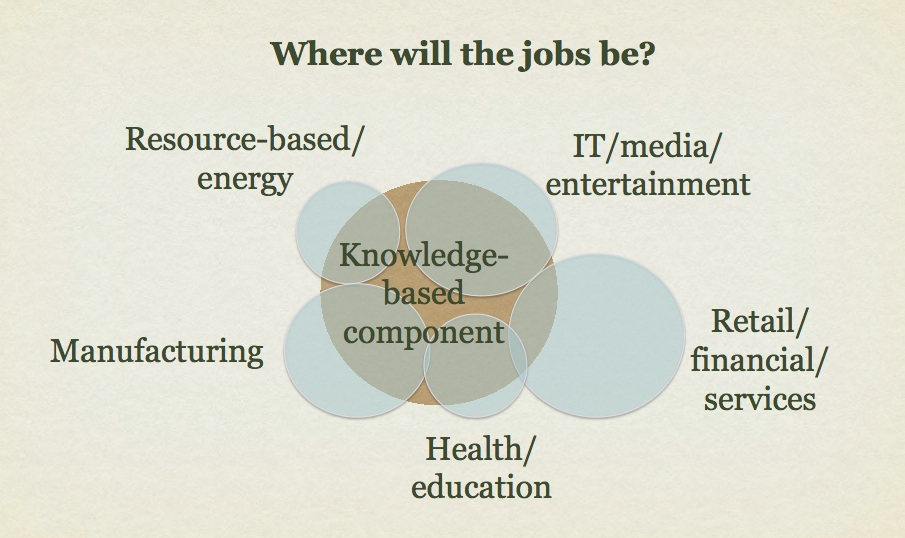

1.1 Mudanças estruturais na economia: o crescimento de uma sociedade do conhecimento

1.1.1 A era digital
Na era digital, estamos cercados — imersos, de fato — pela tecnologia. Além disso, o ritmo das mudanças tecnológicas não dá sinais de desaceleração. A tecnologia está produzindo transformações massivas na economia, na forma como nos comunicamos e nos relacionamos uns com os outros, e cada vez mais na forma como aprendemos. No entanto, nossas instituições educacionais foram construídas em grande parte para outra era, baseadas em um contexto industrial e não digital.
Assim, professores e docentes enfrentam um enorme desafio de mudança. Como podemos garantir que estamos formando egressos, em nossos cursos e programas, que estejam preparados para um futuro cada vez mais volátil, incerto, complexo e ambíguo? O que devemos continuar a preservar em nossos métodos de ensino (e instituições), e o que precisa mudar?
Para responder a essas questões, este livro:
- discute as principais mudanças que estão levando a uma reavaliação do ensino e da aprendizagem;
- identifica diferentes compreensões do conhecimento e os diferentes métodos de ensino associados a essas compreensões;
- analisa as principais características das tecnologias em relação ao ensino e à aprendizagem;
- recomenda estratégias para escolher entre mídias e tecnologias;
- recomenda estratégias para um ensino de alta qualidade na era digital.
Neste capítulo, apresento alguns dos principais desenvolvimentos que estão forçando uma reconsideração de como devemos ensinar.
1.1.2 A natureza mutável do trabalho
Dentre os muitos desafios que as instituições enfrentam, um é essencialmente positivo: o aumento da demanda, especialmente por educação pós-secundária. A Figura 1.1.2 abaixo representa a extensão na qual o conhecimento se tornou um elemento cada vez mais importante do desenvolvimento econômico e, acima de tudo, da criação de empregos.



A figura é simbólica, e não literal. Os círculos azul-claro que representam a força de trabalho total em cada setor de emprego podem ser maiores ou menores, dependendo do país, assim como a proporção de trabalhadores do conhecimento nessa indústria; mas pelo menos nos países desenvolvidos — e cada vez mais nos países em desenvolvimento economicamente — o componente do conhecimento está crescendo rapidamente: são necessários mais cérebros e menos força bruta (ver OCDE, 2013a). Do ponto de vista econômico, a vantagem competitiva vai cada vez mais para as empresas e indústrias que conseguem capitalizar os ganhos de conhecimento (OCDE, 2013b). Na verdade, os trabalhadores do conhecimento muitas vezes criam seus próprios empregos, fundando empresas para oferecer novos serviços ou produtos que não existiam antes de sua formação.
Do ponto de vista pedagógico, o maior impacto provavelmente será sobre os docentes e estudantes de cursos técnicos e profissionalizantes, onde o componente de conhecimento de habilidades antes predominantemente manuais está se expandindo rapidamente. Especialmente nas áreas técnicas, encanadores, soldadores, eletricistas, mecânicos de automóveis e outros trabalhadores ligados a ofícios precisam ser solucionadores de problemas, especialistas em TI e cada vez mais empresários autônomos, além de possuir as habilidades manuais associadas à sua profissão.
A inteligência artificial (IA) é outro desenvolvimento que já está afetando a força de trabalho. O trabalho rotineiro — seja de escritório ou manual — está sendo substituído crescentemente pela automação. Embora todos os tipos de empregos possam ser afetados pelo aumento da automação e das aplicações de IA, os trabalhadores com níveis mais baixos de escolaridade tendem a ser os mais impactados. Aqueles com níveis mais altos de educação têm maior probabilidade de encontrar trabalho que as máquinas não conseguem fazer tão bem — ou até mesmo criar novas ocupações para si mesmos.
1.1.3 Trabalhadores do conhecimento
Os trabalhadores do conhecimento na era digital compartilham certas características comuns:
- geralmente trabalham em empresas pequenas (com menos de 10 pessoas);
- às vezes são donos do próprio negócio, ou são seus próprios chefes; às vezes criaram seu próprio emprego, que não existia até perceberem uma necessidade e terem a capacidade de atendê-la;
- frequentemente trabalham por contrato ou são autônomos, portanto mudam de emprego com certa frequência (a chamada gig economy, ou economia de bicos);
- a natureza do seu trabalho tende a mudar ao longo do tempo, em resposta às evoluções do mercado e da tecnologia; assim, a base de conhecimento do seu trabalho também muda rapidamente;
- são digitalmente habilidosos ou ao menos competentes digitalmente; a tecnologia digital é frequentemente um componente fundamental do seu trabalho;
- como frequentemente trabalham de forma independente ou em pequenas empresas, desempenham muitos papéis: marketing, design, vendas, gestão financeira e contábil, suporte técnico, por exemplo;
- dependem muito de redes sociais informais para captar negócios e se manter atualizados com as tendências atuais em sua área de atuação;
- precisam continuar aprendendo para se manterem em dia no trabalho, e precisam gerenciar esse aprendizado por conta própria;
- acima de tudo, precisam ser flexíveis, para se adaptarem a condições em rápida mudança ao seu redor.
Percebe-se, então, que é difícil prever com precisão o que muitos egressos estarão fazendo dez anos após a graduação, exceto em termos muito amplos. Mesmo em áreas onde há carreiras profissionais bem definidas, como medicina, enfermagem ou engenharia, a base de conhecimento e até mesmo as condições de trabalho devem sofrer rápidas mudanças e transformações ao longo desse período. No entanto, veremos na Seção 1.2 que é possível prever muitas das competências que eles precisarão para sobreviver e prosperar em tal ambiente.
Isso é uma boa notícia para o setor de educação superior e pós-secundária (universidades e faculdades) como um todo, à medida que os níveis de conhecimento e habilidade exigidos no mercado de trabalho aumentam. Isso resultou em uma grande expansão da educação pós-secundária para atender à demanda por trabalho baseado em conhecimento e por níveis mais elevados de competência. A taxa de matrícula no ensino superior de jovens de 19 anos em todas as províncias canadenses aumentou de forma constante, de 53% em 2001 para 64% em 2014, equivalente a um aumento de 21% ao longo do período de 13 anos (Frenette, 2017). Isso significa mais estudantes para universidades e faculdades, mesmo onde as tendências populacionais são estagnadas ou até declinantes.


Referências
OCDE (2013a) OECD Skills Outlook: First Results from the Survey of Adult Skills Paris: OCDE
OCDE (2013b) Competition Policy and Knowledge-Based Capital Paris: OCDE
Frenette, M. (2017) Postsecondary Enrolment by Parental Income: Recent National and Provincial Trends Ottawa: Statistics Canada
Atividade 1.1 Refletindo sobre competências
1. Que tipo de empregos os egressos da sua área de conhecimento tendem a conseguir? Você consegue descrever as competências que provavelmente precisarão nesse trabalho? Em que medida o componente de conhecimento e habilidades nesse tipo de trabalho mudou nos últimos 20 anos?
2. Observe os familiares e amigos que estão fora do seu campo acadêmico ou educacional. Que tipo de conhecimento e habilidades eles precisam hoje que não precisavam quando saíram da escola ou da faculdade? (Talvez seja necessário perguntar a eles!)
3. De que forma exatamente você está ajudando seus estudantes a desenvolver tais competências em seu ensino? Isso é central ou periférico ao seu trabalho? Faz parte do seu trabalho — ou do trabalho de outra pessoa?
Esta atividade não tem feedback.